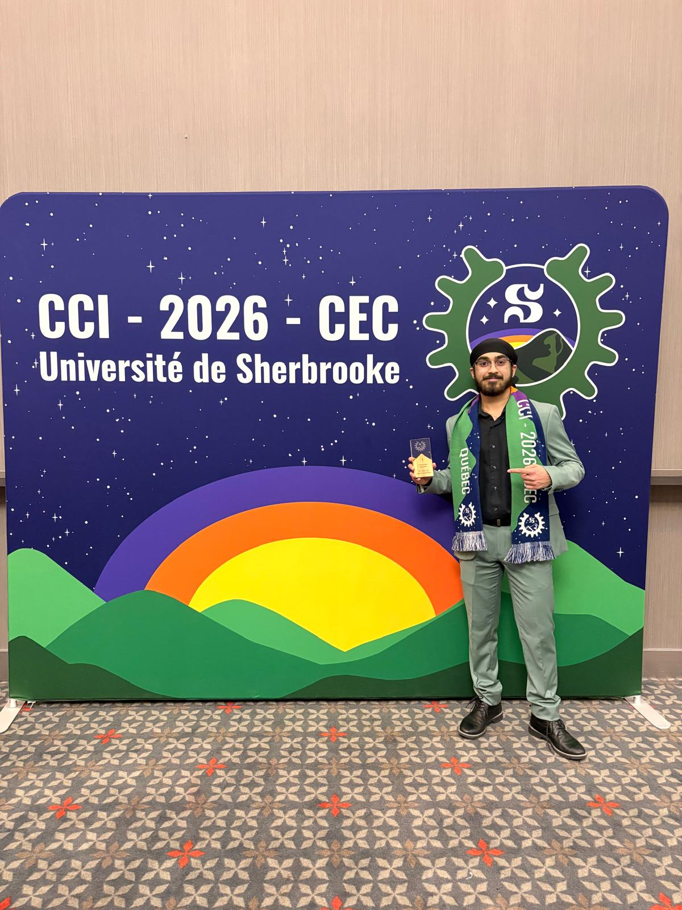

Computer Engineering at the University of Toronto, building autonomous robotics,
machine-learning systems and silicon-adjacent firmware. National champion at the 2026 Canadian
Engineering Competition.
I build systems that have to work in the real world: drones that navigate without a pilot,
models that read language at scale, and firmware that runs before the silicon exists.
I’m a Computer Engineering student at the University of Toronto with minors in Artificial
Intelligence, Robotics and Business. My work spans the whole stack. Pre-silicon CPU and SoC
modelling in C++ and SystemC at Qualcomm, autonomous flight stacks on
ROS2, PX4 and Jetson Orin with the U of T Aerospace Team, and LLM research at the
Dalla Lana School of Public Health, where I’m co-authoring a paper with Dr. Jude Kong.
Most recently I’ve been engineering the detection and track-fusion layer for
Project Heimdall, an early-stage counter-UAS platform that turns whatever radar,
RF, acoustic and EO/IR sensors a site already owns into a single trustworthy air picture. The
numbers below come from its deterministic fusion benchmark.
Leading a team of 6 engineers building a computer-vision rover-tracking platform for autonomous navigation.
Architected a sensor-fusion pipeline that folds camera, LiDAR and proximity measurements into a single rover state vector.
Integrated the hardware sensing units with cloud-backed storage and an interactive dashboard for post-processing analytics.
Computer VisionLiDARSensor FusionCloud
Firmware Developer Intern
Qualcomm
May 2026 to May 2027
Engineered virtual platforms for pre-silicon CPU and SoC modelling in C/C++ and SystemC, optimising hardware architecture evaluation for next-generation AI/ML and robotics workloads.
Designed and integrated transaction-level models (TLM) simulating processor architectures, bridging hardware simulation and real-time firmware execution for complex autonomous systems.
Built CI/CD pipelines and automated regression tests with Python, Docker and Git, ensuring cycle-approximate accuracy against RTL reference designs.
C++SystemCTLMDockerCI/CD
Autonomous Drone Software Developer
U of T Aerospace Team (UTAT), AEAC Software
Aug 2025 to May 2026
Engineered autonomous aerial software stacks with ROS2, PX4 autopilot and Gazebo simulation for robust flight navigation and control in competitive missions.
Built Edge-AI perception with the CV sub-team using YOLOv8 and OpenCV object detection with LiDAR fusion on NVIDIA Jetson Orin.
Implemented flight-stack architecture for mission planning and offboard control over the uXRCE-DDS interface on Ubuntu Linux.
ROS2PX4GazeboYOLOv8Jetson
Machine Learning & LLM Researcher
U of T, Dalla Lana School of Public Health
Oct 2024 to Present
Optimised sentiment-analysis and labelling pipelines by fine-tuning LLMs and traditional NLP transformers.
Investigated and implemented novel prompt-engineering strategies that materially improved LLM inference performance for large-scale sentiment and programmatic tasks.
Co-authoring a research paper with Dr. Jude Kong on recent AI advancements for large-scale programmatic analysis.
PyTorchTransformersNLPResearch
Chief Electoral Officer · Board Speaker · Assistant President
Engineering Society, University of Toronto
Oct 2023 to Present
Independently ran elections with 100+ candidates and thousands of voters, leading a team of 8 Deputy Electoral Officers.
Chair the monthly Board of Directors meetings and directly support the President across high-priority files and institutional stakeholder communication.
LeadershipGovernancePublic Speaking
03
Projects
selected work, from silicon to airspace
04
Toolkit
what I reach for
05
Honours
awards & certifications

2025, 2026
Canadian Engineering Competition, Programming
Four titles across three levels of the same competition track: first at the University of
Toronto (UTEK) in both 2025 and 2026, first provincially at the Ontario Engineering
Competition, and first nationally at CEC 2026 in Sherbrooke, topping 55 Canadian universities
for U of T’s first programming win in two decades. Winning builds included an AWS-hosted
interplanetary navigation system and an AR defect-inspection platform on Unity and DynamoDB.
1st National, CEC 2026
1st Provincial, OEC
2x 1st University, UTEK 2025 and 2026
2023
Air Cadets Challenge Coin
Awarded for exceptional commitment and leadership, only the second recipient in the squadron’s 62-year history.
2023
Valedictorian
Elected valedictorian among 400 students for outstanding academic achievement and leadership.
2024
5T0 Engineering Leadership Award
Recognised for high academic performance and the ability to motivate others to achieve.
Certified
Certifications
AWS Certified Cloud Practitioner, 2025
TCP/IP and OSI Network Architecture Models
Microcontroller Embedded C Programming
EDU
Bachelor of Applied Science, Computer Engineering
University of Toronto · Sept 2023 to June 2028 · Minors in AI, Robotics & Business
ECE470 Robot Modeling & ControlAPS360 Deep LearningECE311 Control SystemsECE344 Operating SystemsECE345 Algorithms & Data StructuresECE243 Computer OrganizationECE212 Circuit AnalysisECE216 Signals & Systems
06
Let’s build
open to internships, research and hard problems
Got something that needs engineering?
Robotics, ML systems, firmware, or a competition team that needs a closer. Reach out.